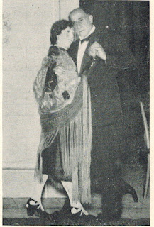
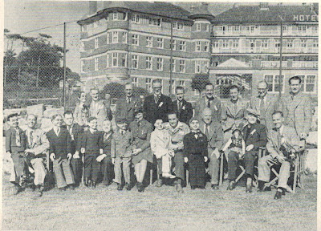

GRAPEVINE NEWS for sale
2/27/2012
I have a very small collection of 5 misc. rare issues of the Grapevine News for sale. This quality newsletter of the day (1940s) was the official publication of the IBV (International Brotherhood of Ventriloquists). I've listed the specific issues with their photo on my eBay listing. As a result of a renaming contest, the publication was issued as "Grapevine News" for only a short period. It is better remembered by the name that followed,"The Oracle". More details here: http://cgi.ebay.com/ws/eBayISAPI.dll?ViewItem&item=260966802288
Here are a couple interesting photos from the pages of 1948 Grapevine News:
Here are a couple interesting photos from the pages of 1948 Grapevine News:
 |
| Spain's professional ventriloquist, Senior Eugenio Balder (Balderrain) "dancing" with the very true to life, Dona Canerias |
{kind=link}
 |
| Group photo taken at Bournemouth (UK) during the 1948 I.B.M. Convention. Unfortunately, no names were attached to the photo. |
{kind=link}